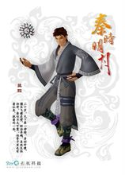

荆天明
男主角。父亲是剑客荆轲,母亲是倾国的丽姬。失去记忆并因身世被秦王追杀。后跟随纵横家盖聂学习剑术,并对其敬仰,渐生父子之情。为人精灵古怪而又有些不知天高地厚,有很强的正义感,十分珍视同伴。迷离的身世牵动着整片大地的风云变幻。武功有很大潜力。 与高月相互喜欢。后在墨家禁地选择"侠道",通过铜人阵,得到墨门至尊武器"非攻"(在第四部最后几集被大司命夺走)。 燕丹在救援机关城时中了大司命的六魂恐咒,不治身亡,临终前启动青龙,并将毕生内功及历代巨子的信物"墨眉"全传给天明,委任他为下任墨家巨子。
高月
女主角。燕丹之女,精通七国文字。来自燕国,封号"高月公主"。燕亡后和普通人一样过着平常生活,但言谈举止间却仍有一股与生俱来的高贵气质。精通医术、药理,是端木蓉的得力帮手,在阴阳巫术方面也有着超乎想象的天份。 原属墨家,后被月神抓走,消去记忆,进入阴阳家,被东皇太一告知了真名"姓姬,名如,字千泷",后作为阴阳家重要人物与月神一同登上蜃楼。继承姬姓千年血统,同时也牵系着一个关乎天下的重要秘密,是解开"苍龙七宿"的关键人物之一。
项少羽
男二号,未来的西楚霸王项羽。楚国名将项燕之孙。项氏一族少主。天明好友兼竞争对手。天赋异禀,有千斤拔鼎之神力。智勇双全,心思细腻。年纪虽小,临阵决敌却已有大将之风。注重仗义。后于墨家禁地选择"王道",得到神兵破阵霸王枪。 墨家机关城沦陷后,和天明化名子羽、子明,住在桑海城儒家小圣贤庄里,躲避秦军搜捕。后与石兰互生好感。
石兰
(初登场于第二部尾声的预告里,后在第三部初次正式登场。第四部起的一切官方设定及宣传物明确与前三人同为主角。) 女二号,神秘莫测的少女。表面上是庖丁客栈中打杂的小伙计,外表柔弱,沉默寡言,默默地关注着周遭所发生的一切。真实身份是蜀山公主,如精灵一般身轻如燕,身手矫捷。有一双冰冷的眼眸,内心有很强的正义感和民族信仰。曾解救少羽、天明。后告知少羽,石兰为族名,本名小虞。与少羽、天明成为朋友,并与少羽互生好感。
少司命
阴阳家五大长老之一（与云中君、大司命、湘君、湘夫人并列），掌管五行派系中的木部。令人闻风丧胆的死亡使者之一，性情冷漠，有着与年龄不相符的高深武功。总是以面纱遮面，传说她美若天仙，但这世上还没有人见过她面纱之下的真正面目。
白凤
神秘优雅的美男子，天赋异禀，具有控制与指挥鸟类的能力，而且容貌俊秀，喜爱穿一身白衣，因此得名号“白凤凰”，称号"百鸟之王"。原为韩国大将军姬无夜麾下“夜幕”组织的杀手之一，后叛逃，加入卫庄为首领的“聚散流沙”组织成为该组织成员之一，位居四天王（与赤练、苍狼王、无双鬼并称）之首。轻功卓越。时常驾驭着白色的巨鸟在天空飞过，能够借助鸟类和羽毛在天空翱翔。
盗跖
墨家统领之一。天下第一神偷，号称“盗王之王”，身材纤瘦，擅长飞檐走壁，轻功卓越，绝技是“电光神行步”。虽然生性油滑，嘴巴不老实，看似不太可靠，但骨子里也有着认真、执着的一面，危难时刻绝不临阵脱逃。讨厌孔子以及儒家的那些大道理。因曾在身受重伤时曾被端木蓉所救而爱慕端木蓉。
盖聂
气质从容淡定，处事冷静。师出鬼谷，剑术出神入化，被称为秦国最强的剑客，在江湖上享有“剑圣”的名号，但是却意外地从秦国叛逃，带着故人荆轲之子荆天明，亡命天涯。佩带名剑“渊虹”。渊虹剑折断后改用木剑。
张良
儒家三当家，与大师兄伏念、二师兄颜路并称为“齐鲁三杰”。虽身为儒家弟子，性格、见识上却反而与墨家慷慨济世的教义相投。在墨家困难之时，挺身而出，并坚持儒墨两家不应相互排斥。暗中帮助墨家等反秦势力，又促成反秦势力与流沙组织的暂时利益合作。
赤练
原为韩国公主，封号“红莲”。后成为聚散流沙四天王之一。性感妩媚的美女。妩媚妖娆的她精通各类毒术，可以控制各类毒蛇。她的火魅术可以使看见她双瞳的人产生幻觉，而她的性感往往比毒药更加危险。宛如赤练蛇一般，有着明艳的颜色给人威慑感。赤练蛇虽然看上去剧毒无比，但其实毒性却很小，正象征了她内心深处的那份温存。